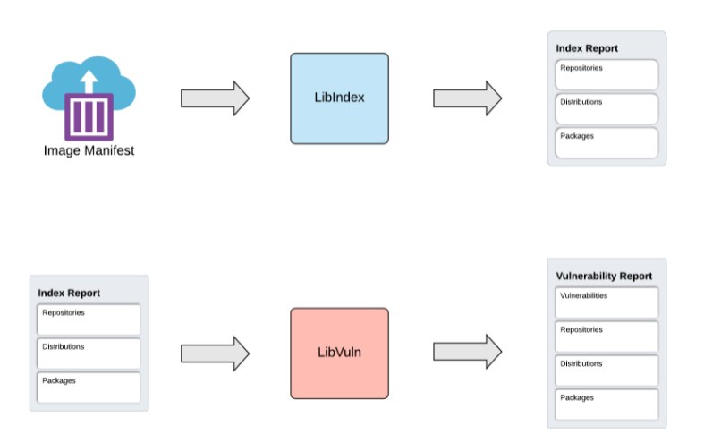
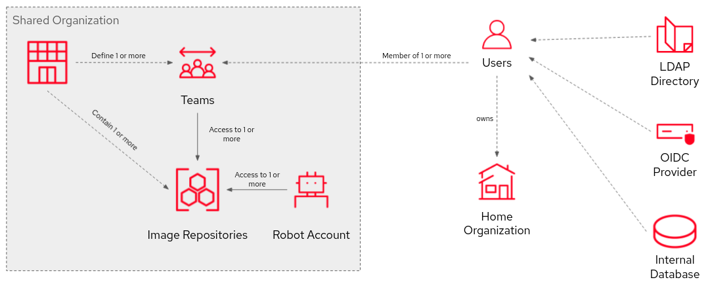
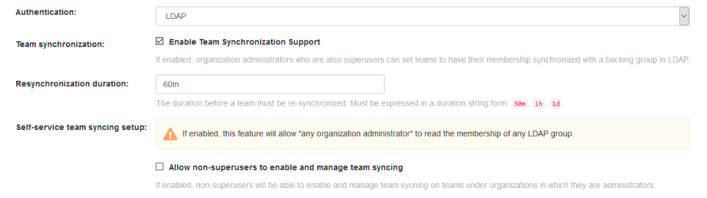
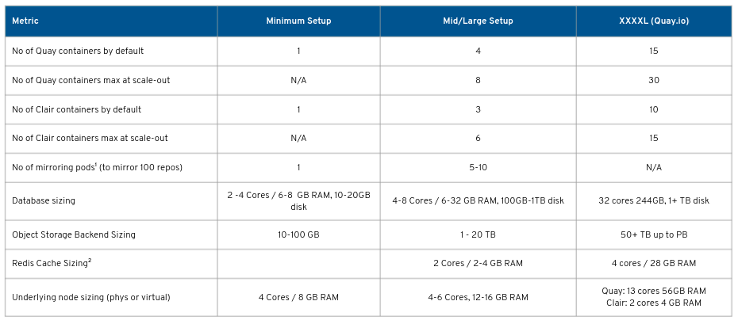
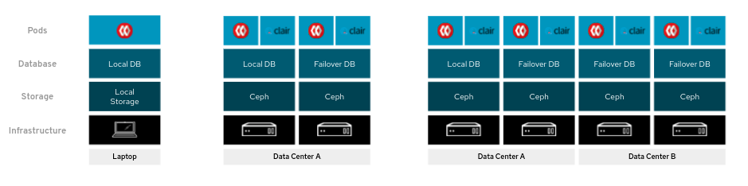
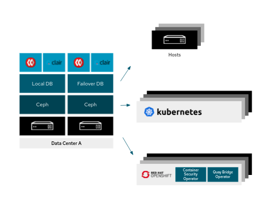
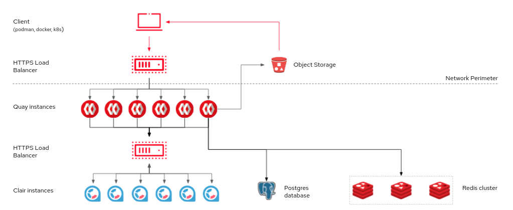
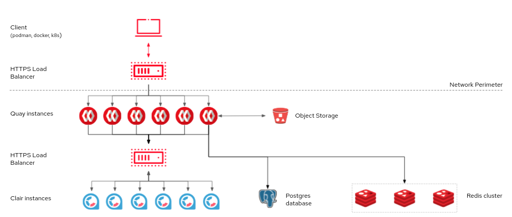

Red Hat Quay Architecture
Red Hat Quay Architecture
Abstract
- 1. Red Hat Quay features
- 2. Core functionality
- 3. Security Overview
- 4. Content distribution
- 5. Access control
- 6. Sizing
- 6.1. Red Hat Quay Sample Sizings
- 6.2. Sample Red Hat Quay on-premises configuration
- 6.3. Red Hat Quay subscription information
- 6.4. Red Hat Quay example deployments
- 6.5. Using Red Hat Quay with or without internal registry
- 6.6. Red Hat Quay deployment topology
- 6.7. Red Hat Quay deployment topology with storage proxy
- 7. Scalability
- 8. Build automation
- 9. Integration
Chapter 1. Red Hat Quay features
Red Hat Quay is a trusted, open source container registry platform that runs everywhere, but runs best on Red Hat OpenShift. It scales without limits, from a developer laptop to a container host or Kubernetes, and can be deployed on-premise or on public cloud. It provides global governance and security controls, with features including image vulnerability scanning, access controls, geo-replication and repository mirroring.

This guide provides an insight into architectural patterns to use when deploying Red Hat Quay. It contains sizing guidance and deployment prerequisites, along with best practices for ensuring high availability for your Quay registry.
Chapter 2. Core functionality
- High availability
- Full standards / spec support
- Long-Term protocol support
- OCI compatibility
- Enterprise grade support
- Regular updates
2.1. Infrastructure
Quay runs on any physical or virtual infrastructure, both on-premise or public cloud. Deployments range from simple to massively scaled, including:
- All-in-one setup on a developer laptop
- Highly available on OpenShift
- Geographically dispersed setup across multiple availability zones and regions
2.1.1. Running Quay on standalone hosts
- Poof-of-concept deployment, where Quay runs on the same machine as the image storage, database, Redis and optionally, Clair security scanning
-
Highly available setups running on multiple hosts, using
systemdto ensure restart on failure/reboot
Standalone deployment is typically a manual process, but it can be automated using Ansible. All standalone hosts require valid RHEL subscriptions.
2.1.2. Running Quay on OpenShift
- Automated deployment and Day 2 management of Red Hat Quay with customization options
- Quay Operator can manage Quay and all dependencies
- Automated scaling and updates
- Integration with existing OpenShift processes like GitOps, monitoring, alerting, logging
Quay can run on OpenShift infra nodes, meaning no further subscriptions are required.
2.1.3. Running Quay with OpenShift
While the Quay Operator ensures seamless deployment and management of Quay running on OpenShift, it is also possible to run Quay in standalone mode and then serve content to one or many OpenShift clusters, wherever they are running. A number of operators are available to help integrate standalone Quay with OpenShift:
- Quay Cluster Security Operator: brings Quay / Clair vulnerability data into the OpenShift Console
- Quay Bridge Operator: ensures seamless integration and user experience for using Quay with OpenShift
2.1.4. Benefits of running Quay on OpenShift
- Zero to Hero: Simplified deployment of Quay and associated components means that you can start using the product immediately
- Scalability: Leverage cluster compute capacity to manage expected demand
- Simplified Networking: Diverse ingress options using well established patterns for any application deployed on the platform
-
Centralized configuration management: Configurations stored in
etcdprovide a centralized source of truth - Repeatability: Consistency regardless of the number of replicas of Quay / Clair
- Expanded Options: Additional solutions that are specifically designed to take advantage of an OpenShift deployment
2.1.5. Single versus multiple registries
Many users consider running multiple, distinct registries while the preferred approach with Quay is to have a single, shared registry. The following table addresses the reasons why a user might want to run multiple registries and how these requirements are addressed in Quay:
| Multiple registries | Quay approach |
|---|---|
|
Clear separation between Dev and Prod |
Use organizations and repositories instead + RBAC Clear separation by content origin |
|
Use organizations and repositories instead + RBAC Required to test registry upgrades given the criticality of the registry for running apps |
Updates and upgrades are tested by Quay QE |
|
Separate registry in each datacenter (DC) |
Quay can serve content to multiple DCs, HA can stretch across DCs |
|
Separate registry for each cluster |
Quay can serve content to thousands of clusters |
|
Scalability concerns over single registry |
Quay scales nearly without limits |
|
Distinct registry configurations |
In this scenario it might make sense to run two distinct registries |
Recommendation:
Running a shared registry helps you to save storage, infrastructure and operational costs. A dedicated registry would be really needed in very specific circumstances.
2.2. Quay prerequisites
2.2.1. Image storage backend
Quay stores all binary blobs in its storage backend
Local storage and NFS only for PoC / test setups
Quay HA requires an HA storage setup
Geo-replication requires object storage and does not work with local storage
2.2.1.1. Supported on-prem storage types
- Ceph Rados RGW
- OpenStack Swift
- RHODF 4 (via NooBaa)
- RHOCS 3 (via NooBaa) (TP) TODO Check
2.2.1.2. Supported public cloud storage types
- AWS S3
- Google Cloud Storage
- Azure Blob Storage
2.2.2. Database backend
Quay stores most of its configuration and all metadata and logs inside its database backend. Logs can be pushed into ElasticSearch instead
PostgreSQL is the preferred database backend since it can be used for both Quay and Clair
Quay works fine with MySQL too (5.7+) but Clair requires PostgreSQL
Quay HA requires an HA database setup
If Quay is running on public cloud infrastructure, we recommend the use of the PostgreSQL services provided by your cloud provider.
Geo-replication requires a single, shared database that is accessible from all regions
2.2.3. Redis
Quay stores builder logs inside a Redis cache. The data stored is ephemeral in nature and as such, Redis does not need to be HA even though it is stateful. if Redis does fail, you will only lose access to build logs.
You can use a Redis image from the Red Hat Software Collections or from any other source you prefer.
2.3. Quay on public cloud
Quay can run on public clouds, either in standalone mode or where OpenShift itself has been deployed on public cloud.
Recommendation: If Quay is running on public cloud, then you should use the public cloud services for Quay backend services to ensure proper HA and scalability
A full list of tested and supported configurations can be found in the Red Hat Quay Tested Integrations Matrix at https://access.redhat.com/articles/4067991
2.3.1. Running Red Hat Quay on AWS

If Red Hat Quay is running on AWS, you can use
- AWS Elastic Load Balancer
- AWS S3 (hot) blob storage
- AWS RDS database
- AWS ElastiCache Redis
- EC2 VMs recommendation: M3.Large or M4.XLarge
2.3.2. Running Red Hat Quay on Microsoft Azure

If Quay is running on Microsoft Azure, you can use:
- Azure managed services such as HA PostgreSQL
- Azure Blob Storage must be hot storage (not Azure Cool Blob Storage)
- Azure Cache for Redis
Chapter 3. Security Overview
Red Hat Quay is built for real enterprise use cases where content governance and security are two major focus areas. Red Hat Quay content governance and security includes a built-in vulnerability scanning via Clair.
Clair is an open source tool developed by CoreOS for Quay that generates analyses of vulnerabilities in application containers, which currently includes Open Container Initiative (OCI) and Docker images. Clients that use the Clair API to index their container images can then match their images against known vulnerabilities.
Clair supports the extraction of contents and assignment of vulnerabilities from the following official base containers:
- Ubuntu Linux
- Debian Linux
- Red Hat Enterprise Linux
- SUSE
- Oracle Linux
- Alpine Linux
- Amazon Linux
- VMWare Photon
- Python
3.1. Red Hat Quay vulnerability scanning using Clair
Clair is equipped with three types of scanners, a matcher, and an updater:
-
Distribution Scanner: This scanner discovers
Distributioninformation, which is typically the base operator system the layer demonstrates features of. - Package Scanner: This scanner performs a package scan on the selected layer and returns all of the found packages.
- Repository Scanner: This scanner discovers any package repositories that are present in the layers.
-
Matcher: Matcher implementation is responsible for telling ClairCore which packages to query, how to query the security advisory database, and whether the discovered
Vulnerabilityfrom the security advisory database affects the provided package. - Updater: The updater is responsible for fetching a security advisory database and parsing the contents.
3.1.1. Understanding Clair analyses
Clair analyses can be broken down into three distinct parts:
Indexing: Indexing starts with submitting a
Manifestto Clair. On receipt, Clair will fetch layers, scan their contents, and return an intermediate representation called anIndexReport.Manifests are Clair’s representation of a container image. Clair leverages the fact
OCI ManifestsandLayersare content-addressed to reduce duplicated work.Once a
Manifestis indexed, theIndexReportis persisted for later retrieval.Matching: Matching is taking an
IndexReportand correlating vulnerabilities affecting theManifestthe report represents.Clair continuously ingests new security data and a request to the matcher will always provide users with the most to date vulnerability analysis of an
IndexReport.-
Notifications: Clair implements a notification service. When new vulnerabilities are discovered, the notifier service will determine if these vulnerabilities affect any indexed
Manifests. The notifier will then take action according to its configuration.
3.1.1.1. Notifications for vulnerabilities found by Clair
Red Hat Quay 3.4 triggers different notifications for various repository events. These notifications vary based on enabled features.
This include the event type Package Vulnerability Found
Additional Filter can be applied for Security Level, and there are various notification methods. Custom notification titles are also optional.
3.1.2. Clair v4
Released with Red Hat Quay 3.4, Clair v4 is the latest version of Clair. It is built on a new architecture consisting of Clair Core and a service wrapper. Clair v4 made several enhancements to Clair v2, including:
- Support for the Python programming language package. Support for additional languages is planned for future versions of Clair and Red Hat Quay.
- Immutable data model and a new manifest-oriented API.
- Refocus on the latest Open Container Initiative (OCI) specifications.
- Image hashes and layer hashes are now treated as content addressable, so that images are uniquely identified as a whole.
3.1.3. Clair v4 architecture
Clair v4 utilizes the ClairCore library as its engine for examining contents and reporting vulnerabilities. At a high level you can consider Clair a service wrapper to the functionality provided in the ClairCore library.
3.1.3.1. ClairCore
ClairCore is the engine behind Clair v4’s container security solution. The ClairCore package exports our domain models, interfaces necessary to plug into our business logic, and a default set of implementations. This default set of implementations defines our support matrix.
ClairCore relies on Postgres for its persistence and the library will handle migrations if configured to do so.
The diagram below is a high level overview of ClairCore’s architecture.

When a claircore.Manifest is submitted to the LibIndex, the library will index its constituent parts and create a report with its findings.
When a claircore.IndexReport is provided to LibVuln, the library will discover vulnerabilities affecting it and generate a claircore.Volunerability report.
3.1.3.1.1. Clair v2 and Clair v4 Comparison
Table 3.1. Clair v2 and Clair v4 component comparison
| Component | Clair v2 | Clair v4 |
|---|---|---|
|
API layers |
In Clair v2, clients were required to provide layers to the API. |
Clair v4 is manifest-based, providing an easier API for users. |
|
Insights and reports |
Clair v2 provided only insights on vulnerabilities |
Clair v4 provides detailed reports on the content of the container, which can be fed to other tools for analyses or inventory purposes. |
|
Architecture |
Clair v2 ran as a monolithic application. |
Clair v4 divides functionality across multiple services for ease of development and scaling use cases. |
|
Support for language packages |
Clair v2 does not support computer language packages. |
Clair v4 supports Python language packages, with plans of adding more in future versions. |
|
Package locator |
Clair v2 did not provide details on where packages were located inside of the container. |
Clair v4 identifies where packages are located inside of the container. |
3.1.4. Migrating from Clair v2 to Clair v4
Starting with Red Hat Quay 3.4, Clair v4 will be used by default. It will also be the only version of Clair continually supported, as older Red Hat Quay versions are not supported with Clair v4 in production. Users should continue using Clair v2 if using a version of Red Hat Quay earlier than 3.4.
Existing Red Hat Quay 3.3 deployments will be upgraded to Clair v4 when managed via the Red Hat Quay Operator. Manually upgraded Red Hat Quay deployments can install Clair v4 side-by-side, which will cause the following:
- All new image vulnerability scans to be performed by Clair v4
- Existing images to be rescanned by Clair v4
3.1.5. Clair v4 limitations
The following limitations are currently being addressed by the development team:
- As of Clair v4, both operating system level and programming language packages are covered. The latter is currently limited to Python, however support for other languages will be added in the future.
-
There is currently limited multi-arch support on Clair v4, which works for package managers like
rpm,yum, anddnfthat compensates for differences in endianess. - Clair v4 does not currently support MSFT Windows images.
- Clair v4 does not currently support slim/scratch container images.
3.1.6. Air-gapped Clair v4
Red Hat Quay 3.4 and later and Clair v4 are supported in disconnected environments. By default, Clair v4 will attempt to run automated updates against Red Hat servers. When Clair v4 in network environments is disconnected from the internet:
-
The Clair v4 auto-update is disabled in the Clair
configbundle. - On a system with internet access, the vulnerability database updates is performed manually and exported to a disk.
- The on-disk data is then transferred to the target system with offline media. It is then manually imported.
Chapter 4. Content distribution
Content distribution features in Red Hat Quay include:
4.1. Repository mirroring
Red Hat Quay repository mirroring lets you mirror images from external container registries (or another local registry) into your Red Hat Quay cluster. Using repository mirroring, you can synchronize images to Red Hat Quay based on repository names and tags.
From your Red Hat Quay cluster with repository mirroring enabled, you can:
- Choose a repository from an external registry to mirror
- Add credentials to access the external registry
- Identify specific container image repository names and tags to sync
- Set intervals at which a repository is synced
- Check the current state of synchronization
To use the mirroring functionality, you need to:
- Enable Repository Mirroring in the Red Hat Quay configuration
- Run a repository mirroring worker
- Create mirrored repositories
All repository mirroring configuration can be performed using the configuration tool UI or via the Quay API
4.1.1. Using repository mirroring
Here are some features and limitations of Red Hat Quay repository mirroring:
- With repository mirroring, you can mirror an entire repository or selectively limit which images are synced. Filters can be based on a comma-separated list of tags, a range of tags, or other means of identifying tags through regular expressions.
- Once a repository is set as mirrored, you cannot manually add other images to that repository.
- Because the mirrored repository is based on the repository and tags you set, it will hold only the content represented by the repo/tag pair. In other words, if you change the tag so that some images in the repository no longer match, those images will be deleted.
- Only the designated robot can push images to a mirrored repository, superseding any role-based access control permissions set on the repository.
- With a mirrored repository, a user can pull images (given read permission) from the repository but not push images to the repository.
- Changing settings on your mirrored repository is done from the Mirrors tab on the Repositories page for the mirrored repository you create.
- Images are synced at set intervals, but can also be synced on demand.
4.1.2. Repository mirroring recommendations
- Repository mirroring pods can run on any node including other nodes where Quay is already running
- Repository mirroring is scheduled in the database and run in batches. As a result, more workers could mean faster mirroring, since more batches will be processed.
The optimal number of mirroring pods depends on:
- The total number of repositories to be mirrored
- The number of images and tags in the repositories and the frequency of changes
- Parallel batches
- You should balance your mirroring schedule across all mirrored repositories, so that they do not all start up at the same time.
- For a mid-size deployment, with approximately 1000 users and 1000 repositories, and with roughly 100 mirrored repositories, it is expected that you would use 3-5 mirroring pods, scaling up to 10 if required.
4.1.3. Event notifications for mirroring
There are three notification events for repository mirroring:
- Repository Mirror Started
- Repository Mirror Success
- Repository Mirror Unsuccessful
The events can be configured inside the Settings tab for each repository, and all existing notification methods such as email, slack, Quay UI and webhooks are supported.
4.1.4. Mirroring API
You can use the Quay API to configure repository mirroring:

More information is available in the Red Hat Quay API Guide
4.2. Geo-replication
Geo-replication allows multiple, geographically distributed Quay deployments to work as a single registry from the perspective of a client or user. It significantly improves push and pull performance in a globally-distributed Quay setup. Image data is asynchronously replicated in the background with transparent failover / redirect for clients.
4.2.1. Geo-replication features
- When geo-replication is configured, container image pushes will be written to the preferred storage engine for that Red Hat Quay instance (typically the nearest storage backend within the region).
- After the initial push, image data will be replicated in the background to other storage engines.
- The list of replication locations is configurable and those can be different storage backends.
- An image pull will always use the closest available storage engine, to maximize pull performance.
- If replication hasn’t been completed yet, the pull will use the source storage backend instead.
4.2.2. Geo-replication requirements and constraints
- A single database, and therefore all metadata and Quay configuration, is shared across all regions.
- A single Redis cache is shared across the entire Quay setup and needs to accessible by all Quay pods.
-
The exact same configuration should be used across all regions, with exception of the storage backend, which can be configured explicitly using the
QUAY_DISTRIBUTED_STORAGE_PREFERENCEenvironment variable. - Geo-Replication requires object storage in each region. It does not work with local storage or NFS.
- Each region must be able to access every storage engine in each region (requires a network path).
- Alternatively, the storage proxy option can be used.
- The entire storage backend (all blobs) is replicated. This is in contrast to repository mirroring, which can be limited to an organization or repository or image.
- All Quay instances must share the same entrypoint, typically via load balancer.
- All Quay instances must have the same set of superusers, as they are defined inside the common configuration file.
If the above requirements cannot be met, you should instead use two or more distinct Quay deployments and take advantage of repository mirroring functionality.
4.2.3. Geo-replication architecture

In the example shown above, Quay is running in two separate regions, with a common database and a common Redis instance. Localized image storage is provided in each region and image pulls are served from the closest available storage engine. Container image pushes are written to the preferred storage engine for the Quay instance, and will then be replicated, in the background, to the other storage engines.
The following block diagram shows a possible distribution of resources where Quay has been deployed on two OpenShift clusters using the Operator:

4.2.4. Mixed storage for geo-replication
Quay geo-replication supports the use of different, and multiple, replication targets for example, using AWS S3 storage on public cloud and using Ceph storage on-prem. This complicates the key requirement of granting access to all storage backends from all Quay pods and cluster nodes. As a result, it is recommended that you:
- Use a VPN to prevent visibility of the internal storage or
- Use a token pair that only allows access to the specified bucket used by Quay
This will result in the public cloud instance of Quay having access to on-prem storage but the network will be encrypted, protected, and will use ACLs, thereby meeting security requirements.
If you cannot implement these security measures, it may be preferable to deploy two distinct Quay registries and to use repository mirroring as an alternative to geo-replication.
4.3. Repository mirroring versus geo-replication
Quay geo-replication mirrors the entire image storage backend data between 2 or more different storage backends while the database is shared (one Quay registry with two different blob storage endpoints). The primary use cases for geo-replication are:
- Speeding up access to the binary blobs for geographically dispersed setups
- Guaranteeing that the image content is the same across regions
Repository mirroring synchronizes selected repositories (or subsets of repositories) from one registry to another. The registries are distinct, with registry is separate database and image storage. The primary use cases for mirroring are:
- Independent registry deployments in different datacenters or regions, where a certain subset of the overall content is supposed to be shared across the datacenters / regions
- Automatic synchronization or mirroring of selected (whitelisted) upstream repositories from external registries into a local Quay deployment
Repository mirroring and geo-replication can be used simultaneously.
Table 4.1. Red Hat Quay Repository mirroring versus geo-replication
| Feature / Capability | Geo-replication | Repository mirroring |
|---|---|---|
|
What is the feature designed to do? |
A shared, global registry |
Distinct, different registries |
|
What happens if replication or mirroring hasn’t been completed yet? |
The remote copy is used (slower) |
No image is served |
|
Is access to all storage backends in both regions required? |
Yes (all Red Hat Quay nodes) |
No (distinct storage) |
|
Can users push images from both sites to the same repository? |
Yes |
No |
|
Is all registry content and configuration identical across all regions (shared database) |
Yes |
No |
|
Can users select individual namespaces or repositories to be mirrored? |
No,by default |
Yes |
|
Can users apply filters to synchronization rules? |
No |
Yes |
4.4. Air-gapped / disconnected deployments
- Quay and Clair connected to the internet, with an air-gapped OpenShift cluster accessing the Quay registry through an explicit, white-listed hole in the firewall
- Quay and Clair running inside the firewall, with image and CVE data transferred to the target system using offline media. The data is exported from a separate Quay and Clair deployment that is connected to the internet.

4.4.1. Using Clair in air-gapped environments
By default, Clair will attempt to run automated updates against Red Hat servers. To run Clair in network environments that are disconnected from the internet:
- Disable Clair auto-update in the Clair configuration bundle
- Manually update the vulnerability database on a system with internet access and then export to disk
- Transfer the on-disk data to the target system using offline media and then manually import it into Clair
Using Clair in air-gapped environments is fully containerized and, as a result, is easy to automate.
Chapter 5. Access control
Red Hat Quay provides both Role Based Access Control (RBAC) and Fine-Grained Access Control, and has team features that allow for limited access control of repositories, organizations, and user privileges. Red Hat Quay access control features also provide support for dispersed organizations.

5.1. Repository organizations and users
Red Hat Quay repository organizations provide a way to share repositories under a common namespace that does not belong to a single user. These organizations allow repositories to be used in a shared setting, for example, by a company.
The following is a brief overview of the organization’s main page:
- Managing teams: used to manage teams within the organization
- Creating a team: used to create a team within the organization
- Team Global Permissions: used to define the global permissions of teams within an organization
- Managing team members: used to manage teams within the organization.
Defined permissions:
Permission Abilities Members
Inherits all permissions sets for the team
Creator
All member positions, plus the ability to create new repositories
Admin
Full administrative access to the organization, including the ability to create news, add members, and set permissions.
5.1.1. Red Hat Quay users
A new Red Hat Quay user can set up an account at www.quay.io. Usernames must be unique, and they cannot be changed once invited to an organization. After a user account is established, options to sign in via Google or GitHub can be added.
User accounts allow individuals to log in through the Red Hat Quay UI or a client, such as docker login or podman login.
Because docker login via the CLI stores passwords in plaintext, we recommend generating an encrypted version of the password.
Each user automatically gets their own user namespace, for example, quay.example.com/user/<username>.
User namespaces are different from Quay organizations. There are no teams, usage logs, default permissions, or OAuth applications. By comparison, organizations are listed under quay.example.com/organization.
Users who are not members of an organization can be added to the repository and given permissions. External users are marked with a special character inside of the Users and Robot Permissions section under the Repository Settings tab. They are also shown under the Collaborators View tab on on the organization level of the Teams and Membership page.
5.1.2. Red Hat Quay robot accounts
Robot accounts are named tokens that hold credentials for accessing external repositories. By assigning credentials to a robot, that robot can be used across multiple mirrored repositories that need to access the same external registry.
Robot accounts are managed inside of the Robot Accounts tab. They can only belong to one organization, but can be assigned to multiple Teams.
Teams and users can belong to multiple organizations.
For more information on robot accounts, see Working with mirrored repositories.
5.1.3. Red Hat Quay Super users
Super users are a group of Red Hat Quay users with enhanced access and privileges, including:
- Super user API calls that are not visible or accessible to normal users.
Access to the
Super User Admin Panel, which allows users to- Change a user’s email address, password, delete, or disable users.
- Rename, delete, or take ownership of an organization.
- Change expiration time, rename, or delete service keys such as Clair.
- Access to global and registry-wide usage, or audit, logs.
- Create and send globally visible user messages.
Primary super users are created during the initial Red Hat Quay configuration, and more can be created after configuration is complete.
Super users cannot delete repositories or organizations without taking ownership of them first.
5.2. Permissions
Organizations are organized into a set of Teams and can provide access to a subset of the repositories under that namespace. Permissions for users within an organization can be set for individuals, teams, and robot accounts.
Permissions are only applied to new users and teams when a new repository is created.
5.2.1. Role Based Access Control (RBAC)
Red Hat Quay offers three types of permissions:
-
Read, which allows users, robots, and teams to pull images. -
Write, which allows users, robots, and teams to push images. -
Admin, which provides users, robots, and teams with administrative privileges.
Administrative users can delegate new permissions for existing users and teams, change existing permissions, and revoke permissions when necessary
Permissions can be delegated across the entire organization and on specific repositories. For example, Read permissions can be set to a specific team within the organization, while Admin permissions can be given to all users across all repositories within the organization.
5.2.2. Fine Grained Access Control
Red Hat Quay allow users to integrate their existing identity infrastructure and use a fine-grained permissions system to map their organizational structure and grant access to whole teams to manage specific repositories.
Red Hat Quay is supported by the following authentication providers:
- Built-in Database Authentication
- Lightweight Directory Access Protocol (LDAP) authentication and _sync
- External OpenID Connect (OIDC) provider
- OpenStack Keystone
5.2.2.1. Bind team membership to specific LDAP groups
With Red Hat Quay, team sync support can be enabled via the config application by clicking on the Enable team synchronization support button once Lightweight Directory Access Protocol (LDAP) is selected as the internal authentication method:

The default time to sync groups is 60 minutes, but can be modified to any other time frame if needed. The first sync happens immediately after linking a team to a specific group. The last option enables any team admin, and not just super users, to sync groups.
In order to enable team sync, users must configure their teams by clicking on the Enable Directory Synchronization button in the Teams tab. A distinguished name is required relative to the base DN. For example:
cn=quayusers,ou=cloud
If binding to the group goes correctly, Red Hat Quay will display the group’s distinguished name and the "last updated" status on the page.
Once sync is enabled, adding users to the group is no longer possible. It becomes read only.
Users that are added to the LDAP group will automatically be added to the team as well. Robot accounts can still be added to the group directly.
5.2.2.2. LDAP filtering
Lightweight Directory Access Protocol (LDAP) is an open, vendor neutral, industry standard application protocol for accessing and maintaining distributed directory information services over an IP network. Red Hat Quay supports using LDAP as an identity provider. Red Hat Quay users can now apply additional filters for lookup queries if (LDAP) / AD authentication is used. For information on setting up LDAP authentication for Red Hat Quay, see LDAP authentication setup for Red Hat Quay.
5.2.2.3. Red Hat Quay and Red Hat SSO / Keycloak
Quay Enterprise can support authentication via OpenID Connect (OIDC). Red Hat Single Sign On (SSO) is an OIDC provider that allows administrators to have a seamless authentication integration between Quay Enterprise and other application platforms such as Red Hat OpenShift Container Platform.
Red Hat Quay and Red Hat SSO / Keycloak requires that TLS/SSL is properly configured to proceed with setup. Red Hat SSO supports many different types of OIDC. Quay Enterprise, however, only supports OIDC clients configured for Confidential Client Credentials. For more information configuring Red Hat SSO, see Quay Enterprise with Red Hat Single Sign On / Keycloak.
Chapter 6. Sizing
Scalability of Red Hat Quay is one of its key strengths. With Red Hat Quay, a typical mid-size deployment of approximately 2,000 users can serve content to thousands of kubernetes clusters world-wide through Quay.io.
Since sizing heavily depends on a multitude of factors, such as the number of users, images, concurrent pulls and pushes, etc., there are no standard sizing recommendations.
Stateless components of Red Hat Quay can be scaled out. This will cause a heavier load on backend services.
Scaling out stateless components will add heavier loads to stateful components.
Auto-scaling on k8s deployments is currently in development, and will be implemented in a future version of the Quay operator.
The following are the minimum requirements for systems running Red Hat Quay (per container/pod instance):
- Quay: minimum 6GB; recommended 8GB + swap, 2 more more vCPUs
- Clair: recommended 2GB RAM + sqap, 2 or more vCPUs
- Storage: recommended 30GB
-
NooBaa: minimum 2GB, 1 vCPU (when
objectstoragecomponent is selected via the Operator) - Clair database requirements for security metadata: minimum 200MB
6.1. Red Hat Quay Sample Sizings
The following is a sample sizing of an existing Red Hat Quay deployment. Whether a deployment runs appropriately with the same metrics will depend on many other factors not shown below.

6.2. Sample Red Hat Quay on-premises configuration
The following images shows an example on-premises configuration.

6.3. Red Hat Quay subscription information
Red Hat Quay is available with Standard or Premium support, and subscriptions are based on deployments.
Deployment means an installation of a single Red Hat Quay registry using a shared data backend.
With a Red Hat Quay subscription
- there is no limit on the number of pods (Quay, Clair, Builder, etc.) a user can create.
- Quay pods can run in multiple data centers/availability zones.
- multiple storage backends and database backends can be run, so long as it is one shared storage backend and one shared database backend.
- users can manage content for a single cluster or thousands of clusters.
- access to clusters or datacenters is not dependent on a user’s physical location.
- users have access to CSO and the Quay Bridge Operator at no additional cost.
Red Hat Quay geo-replication requires a subscription for each storage replication. The database, however, is shared.
For more information on purchasing a Red Hat Quay subscription, see Red Hat Quay.
6.4. Red Hat Quay example deployments
The following images show two Red Hat Quay example deployments:


6.5. Using Red Hat Quay with or without internal registry
Red Hat Quay can be used as an external registry in front of multiple OpenShift clusters with their internal registries.
Red Hat Quay can also be used in place of using the internal registry when it comes to automating builds and deployment rollouts. The required coordination of Secrets and ImageStreams is automated by the Quay Bridge Operator, which can be launched from the Operatorhub of OpenShift.
6.6. Red Hat Quay deployment topology
The following image provides a high level overview of a Red Hat Quay deployment topology.

In this deployment, all pushes, UI, and API requests come in via public Quay endpoints. Pulls are served directly from object storage.
6.7. Red Hat Quay deployment topology with storage proxy
The following image provides a high level overview of a Red Hat Quay deployment topology with storage proxy configured.

With storage proxy configured, all traffic passes through the public Quay endpoint.
Chapter 7. Scalability
- Massive scale testing Quay.io
- Real-time garbage collection
- Automated squashing
Chapter 8. Build automation
- Seamless Git integration
- Build workers
- Webhooks
Chapter 9. Integration
- Extensible API
- Webhooks, OAuth
- Robot Accounts